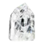

Mineral Grimoire

Fire and Ice QuartzAppearance
Crackled and cracked with inner planes and inclusions, heat-treated shaped point.
Origin
Brazil (thermally shocked crystal)
Attributes
Fire and Ice Quartz (also known as Rainbow Quartz) is a powerful light bringer with an exceedingly high vibration that has its own story to tell.
Although looking like Crackled Quartz, it has been subjected to thermal shock – heated and rapidly cooled – but the underlying Quartz has a high vibration that released its innate power to fertilize the earth and the soul. This created a crystal characterized by fractures, flaws and inclusions that contain numerous rainbows and which activates expanded awareness. Carrying cosmic fire, it is inspirational, facilitating ignition of spiritual purpose.
This Quartz contains images of the Tree of Life, sacred geometry and figures that draw on shamanic medicine. The symbols can be read to give soul advice on transformation. Fire and Ice Quartz links polarities and integrates the full spectrum of consciousness. It has a particular resonance with the heart chakra of the Andes. Fire and Ice Quartz cleanses and aligns all the chakras in the physical body and activates the soma, soul star and stellar gateway.
A crystal for lightworkers, Fire and Ice resonates with the left hand but does not work from the dark side. It harmonizes dualities and encompasses dark energy to balance light. It carries the energy of Buddhist diamond healing and links to Raphael, the archangel of healing. In past life healing, it connects to ancient Egypt and resolves misuse of power from that life.
Fire and Ice Quartz contains the spirit of life and of pure love. Self-cleansing, it is particularly useful for spiritual manifestation, having a strong resonance with the law of attraction. It is a stone for new beginnings and profound growth, cutting through the old to reveal the soul's purpose, which is achieved through acceptance of the creation of personal reality. Opening the third eye and assisting kything, it facilitates perceiving different timelines, endless possibilities and the beauty of all through its interconnectedness to multi-realities and dimensions.
Fire and Ice Quartz recalibrates the resonance of all Quartzes to a higher level, and moves to a higher vibration itself so that it restores equilibrium. It acts as a battery for the earth's grid and, when the energy is taken to the heart of Mother Earth, it fertilizes our planet providing a power source for earthly transformation. You need to feel worthy to work with this crystal, which assists but does not do the work for you. It gently brings up your own issues for transmutation and supports during the process. It is a stone of joy and happiness, resurrection and rebirth.
Fire and Ice Quartz carries bioscalar waves for multi-dimensional, intercellular healing at all levels. The crystal stimulates the pineal and pituitary glands, reconfiguring the endocrine system. It facilitates healing for the reproductive and urinary tracts, activating the kundalini to sweep through the kidneys in a purifying process. Healing the etheric, causal and higher spiritual bodies, Fire and Ice Quartz opens the central channel and ignites the higher kundalini energy in the lightbody.
Healing
Fire and Ice Quartz energetically assists the pineal and pituitary glands, endocrine system, reproductive and urinary tracts. It purifies and realigns the subtle and causal biomagnetic bodies.
Position
Meditate with the crystal, place or hold as appropriate. Place larger pieces where the light of the sun energizes it during the day and each evening visualize that light beaming into the heart of the earth. Disperse gem essence into the aura or environment.